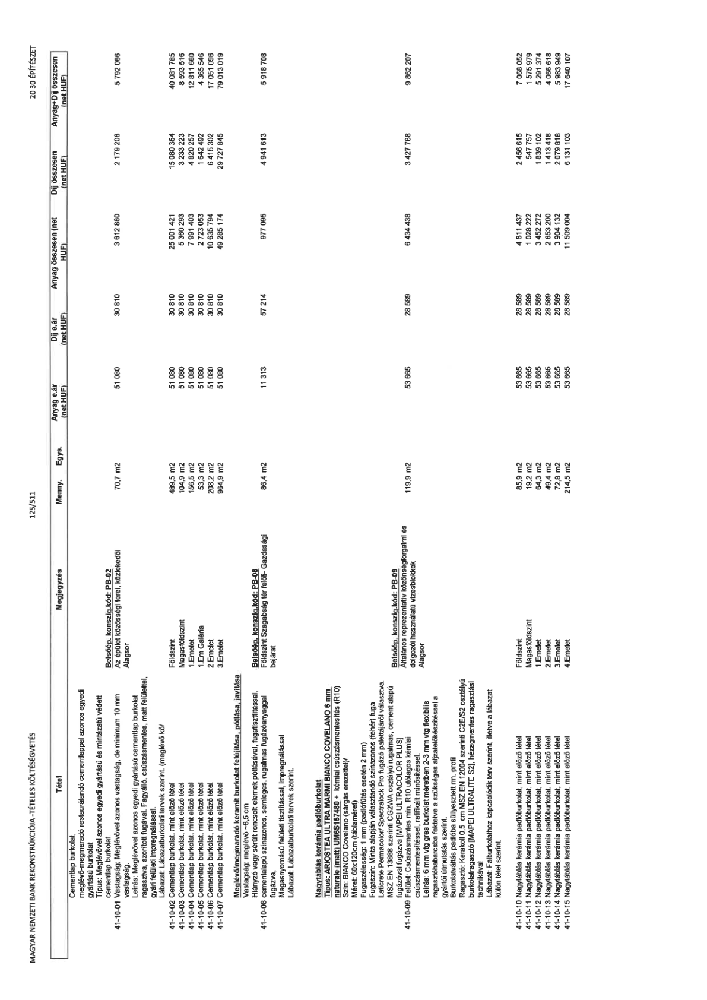

| Tétel | Megjegyzés | Menny. | Egys. | Anyag e.ár (net HUF) | Díj e.ár (net HUF) | Anyag összesen (net HUF) | Díj összesen (net HUF) | Anyag+Díj összesen (net HUF) |
|---|---|---|---|---|---|---|---|---|
| 41-10-01 | Cementlap burkolat, meglévő-megmaradó restaurálandó cementlappal azonos egyedi gyártású burkolat Típus: Meglévővel azonos egyedi gyártású és mintázatú védett cementlap burkolat. Vastagság: Meglévővel azonos vastagság, de minimum 10 mm vastagság. Leírás: Meglévővel azonos egyedi gyártású cementlap burkolat ragasztva, szorított fugával. Fagyálló, csúszásmentes, matt felülettel, gyári felületi impregnálással. Lábazat: Lábazatburkolati tervek szerint. (meglévő kő/ Belsőép. konszig.kód: PB-02 Az épület közösségi terei, közlekedői Alagsor | 70,7 | m2 | 51 080 | 30 810 | 3 612 860 | 2 179 206 | 5 792 066 |
| 41-10-02 | Cementlap burkolat, mint előző tétel Földszint | 489,5 | m2 | 51 080 | 30 810 | 25 001 421 | 15 080 364 | 40 081 785 |
| 41-10-03 | Cementlap burkolat, mint előző tétel Magasföldszint | 104,9 | m2 | 51 080 | 30 810 | 5 360 293 | 3 233 223 | 8 593 516 |
| 41-10-04 | Cementlap burkolat, mint előző tétel 1.Emelet | 156,5 | m2 | 51 080 | 30 810 | 7 991 403 | 4 820 257 | 12 811 660 |
| 41-10-05 | Cementlap burkolat, mint előző tétel 1.Em Galéria | 53,3 | m2 | 51 080 | 30 810 | 2 723 053 | 1 642 492 | 4 365 546 |
| 41-10-06 | Cementlap burkolat, mint előző tétel 2.Emelet | 208,2 | m2 | 51 080 | 30 810 | 10 635 794 | 6 415 302 | 17 051 096 |
| 41-10-07 | Cementlap burkolat, mint előző tétel 3.Emelet | 964,9 | m2 | 51 080 | 30 810 | 49 285 174 | 29 727 845 | 79 013 019 |
| 41-10-08 | Meglévő/megmaradó keramit burkolat felújítása, pótlása, javítása Vastagság: meglévő ~6,5 cm Hiányzó vagy sérült roncsolt elemek pótlásával, fugatisztítással, cementalapú színazonos, semleges, rugalmas fugázóanyaggal fugázva, Magasnyomású felületi tisztítással, impregnálással Lábazat: Lábazatburkolati tervek szerint. Belsőép. konszig.kód: PB-08 Földszint Szabadság tér felőli - Gazdasági bejárat | 86,4 | m2 | 11 313 | 57 214 | 977 095 | 4 941 613 | 5 918 708 |
| 41-10-09 | Nagytáblás kerámia padlóburkolat Típus: ARIOSTEA ULTRA MARMI BIANCO COVELANO 6 mm, naturale (matt) UM6S157480 + kémiai csúszásmentesítés (R10) Szín: BIANCO Covelano (sárgás erezettel)/ Méret: 60x120cm (táblaméret) Fugaszélesség: 1 mm (padlófűtés esetén 2 mm) Fugaszín: Minta alapján választandó színazonos (fehér) fuga Laticrete Permacolor/ Spectralock Pro fugázó palettájáról választva. MSZ EN 13888 szerinti CG2WA osztályú rugalmas, cement alapú fugázóval fugázva [MAPEI ULTRACOLOR PLUS] Felület: Csúszásmentes min. R10 utólagos kémiai csúszásmentesítéssel, ratifikált minősítéssel. Leírás: 6 mm vtg gres burkolat méretben 2-3 mm vtg flexibilis ragasztóhabarcsba fektetve a szükséges aljzatelőkészítéssel a gyártói útmutatás szerint. Burkolatváltás padlóba süllyesztett mm. profil Ragasztó: Kerafoll 0,5 cm MSZ EN 12004 szerinti C2E/S2 osztályú burkolatragasztó [MAPEI ULTRALITE S2], hézagmentes ragasztási technikával Lábazat: Falburkolathoz kapcsolódik terv szerint, illetve a lábazat külön tétel szerint. Belsőép. konszig.kód: PB-09 Általános reprezentatív közönségforgalmi és dolgozói használatú vizesblokkok Alagsor | 119,9 | m2 | 53 665 | 28 589 | 6 434 438 | 3 427 768 | 9 862 207 |
| 41-10-10 | Nagytáblás kerámia padlóburkolat, mint előző tétel Földszint | 85,9 | m2 | 53 665 | 28 589 | 4 611 437 | 2 456 615 | 7 068 052 |
| 41-10-11 | Nagytáblás kerámia padlóburkolat, mint előző tétel Magasföldszint | 19,2 | m2 | 53 665 | 28 589 | 1 028 222 | 547 757 | 1 575 979 |
| 41-10-12 | Nagytáblás kerámia padlóburkolat, mint előző tétel 1.Emelet | 64,3 | m2 | 53 665 | 28 589 | 3 452 272 | 1 839 102 | 5 291 374 |
| 41-10-13 | Nagytáblás kerámia padlóburkolat, mint előző tétel 2.Emelet | 49,4 | m2 | 53 665 | 28 589 | 2 653 200 | 1 413 418 | 4 066 618 |
| 41-10-14 | Nagytáblás kerámia padlóburkolat, mint előző tétel 3.Emelet | 72,8 | m2 | 53 665 | 28 589 | 3 904 132 | 2 079 818 | 5 983 949 |
| 41-10-15 | Nagytáblás kerámia padlóburkolat, mint előző tétel 4.Emelet | 214,5 | m2 | 53 665 | 28 589 | 11 509 004 | 6 131 103 | 17 640 107 |
